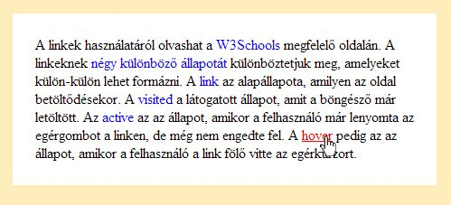

4. Lecke: A Stílusok használata
Célok
- Ismerje a stílusformázás előnyeit
- Ismerje a stílusok használatának módjait és precedenciáját
- Ismerje a CSS nyelv szintaktikáját
- Ismerje a kijelölők fajtáit és használatát
Tartalom
- A stílusformázás előnyei
- Stílus csatolásának módjai a weboldalhoz
- A CSS nyelv és szintaktikája
- A kijelölők fajtái
- A kijelölők kombinálási lehetőségei
A stílusformázás előnyei
Hagyományosan a HTML nyelv tartalmaz formázási tag-eket illetve attribútumokat. Az oldal megjelenési formáját ezek határozták meg. Ahogy a weboldalak egyre összetettebbek lettek illetve egyre több elemet tartalmaztak, az oldalak forrása túl bonyolulttá vált, egyre nehezebb volt értelmezni a kódot. Az oldalak formátumának módosítása nagyon nehézkes volt és sok hibalehetőséget hordozott magában. Ráadásul bizonyos formázási műveleteket nem lehetett elvégeznia HTML eszközkészletével. Ezért alakult ki az a tendencia, hogy a weboldal külalakjának definiálása váljon el az oldal szerkezetétől. Erre egy külön nyelvet alakítottak ki, a CSS (Cascading Style Sheets) nyelvet, melynek az aktuális verziója a CSS3. Innentől kezdve a webfejlesztés ajánlott módszertana, hogy a HTML nyelvet arra használjuk, hogy megadjuk az oldalt felépítő elemeket és az oldal kinézetét stílusok használatával adjuk meg. Ennek több előnye is van:
- A forrás áttekinthetőbb, könnyebb tájékozódni az oldal felépítését illetve az oldal kinézetét meghatározó szempontok szerint.
- A formátumokat egyszer kell megadni és nem annyiszor, ahányszor előfordul.
- A formátumok hordozhatóak, azaz bizonyos stílus formátumokat több weboldalon is használhatunk a stíluslap több weboldalhoz rendelésével.
- Jóval több formázási eszközt használhatunk, mint a HTML nyelvvel.
- Az oldal formátuma könnyebben átalakítható, mivel „csak" a stílusokat kell átdolgozni, amelyet csak egy helyen kell elvégezni és érvényes lesz az összes oldalra, amihez hozzá van rendelve.
Stílus megadása a weboldalhoz
Stílust háromféleképp lehet a weboldalhoz megadni. Lehet közvetlenül a tag-ben, ún. szövegközi stílus, amely csak arra a tag-re vonatkozik.
<tag style="..." >...
(Természetesen a tag szó helyére a kívánt tag elnevezése helyettesítendő. Ezt a jelölés a későbbiekben is ilyen értelemben szerepel a tananyagban.)
Ez csak nagyon indokolt esetben alkalmazandó, használata nehézkes, mert a stílust minden helyen meg kell adni, ahol használni szeretnénk és belefolyik a HTML kódba.
A másik, amikor az oldal fej részében adjuk meg a stílusleírásokat, az ún. beágyazott stílust, ez az egész oldalra vonatkozik.
<style type="text/css"> ... </style>
Figyelni kell arra, hogy ebben a részben már a CSS szintaktika érvényes!
A harmadik lehetőség, ha külső állományban írjuk le a stílusokat, majd az állományt az oldalunkhoz csatoljuk, ahogy az előző leckében már szerepelt:
<link href="stilus.css" type="text/css" rel="stylesheet" />
Ilyenkor természetesen a stílus az összes olyan oldalra vonatkozik, amelyhez a stíluslapot hozzácsatoltuk.
A CSS nyelv
A CSS nyelv szerepe, hogy meghatározza, hogy mely HTML elemek hogyan nézzenek ki. A nyelv kis-nagybetű érzékeny, tehát mindent egységesen kis-nagybetű helyesen kell írni. A formátumok megadása blokkokban történik, amelynek szintaktikája a következő:
kijelölő{
tulajdonság : érték;
...
}
A kijelölő határozza meg, hogy az oldalon mely tag-ekre vonatkozik a formátum, amelyet kapcsos zárójelek között adunk meg pontosvesszővel elválasztva. A tulajdonság és értéke között kettőspont található. Mivel több kijelölő is vonatkozhat ugyanarra a tag-re, így fontos a blokkok sorrendjére ügyelni, a később szereplő blokk formátuma felüldefiniálja a korábbi blokkot.
Megjegyzés
Érdemes azokat a blokkokat, amelyek ugyanazokat az elemeket jelölik ki, egymás után szerepeltetni. Természetesen, ha lehetséges. Egyik gyakori kezdő hiba, amikor az történik, hogy szeretnénk megváltoztatni egy elem tulajdonságát, de nincs hatása a változtatásnak. Ennek az az oka, hogy valahol később szerepel a stílusban egy másik blokk, ami ugyanerre az elemre vonatkozik és az a stílus felüldefiniálja minden itteni beállításunkat.
A stílus forrásába is lehet megjegyzéseket fűzni, amelyet nem értelmez a böngésző. Ennek szintaktikája:
/* megjegyzés */
A kijelölők típusai
A kijelölők mindig egy vagy több tag-et határoznak meg a weboldalon. A pontos hivatkozás eléréséhez a kijelölőknek több típusa létezik:
Univerzális kijelölő
Ez az oldal összes tag-jét jelenti.
* { ... }
Az univerzális kijelölőt olyan formátumra szoktuk használni, ami általánosan szinte minden elemre megadható. Például az elemek margóját (6. Lecke) a böngészők másként használják alapértelmezettként, így gyakran kezdjük azzal a stílusleírást, hogy megadjuk minden elemre a nulla margót.
* { margin : 0px; }
Elemkijelölő
Ez mindig egy tag neve, amely hivatkozik az oldalon szereplő összes ilyen tag-re. Például a bekezdést jelentő <p>...</p> tag-ekre egyben tudok formátumot megadni a
p { ... }
elemkijelölő használatával.
Gyakori, hogy elemkijelölővel bizonyos tag-eknek adunk azonos formátumokat, például az összes bekezdés szövegének megadjuk a betűtípusát.
p { font-family : arial, sans-serif; }
Osztálykijelölő
Ha különböző típusú tag-eket szeretnék csoportosítani és azonos formátumot adni nekik, akkor osztályokat képezünk, amelyekbe belesoroljuk a kívánt tag-eket. A stílusban az osztálykijelölők mindig ponttal kezdődnek:
.osztaly { ... }
A HTML kódban a tag-eknél meg kell adni, hogy mely osztályba tartoznak, amelyre a class attribútumot használjuk:
<tag class="osztaly" ...>...
Egy tag több osztályba is tartozhat, ilyenkor a class attribútumnál az összes osztály nevét felsoroljuk szóközzel elválasztva:
<tag class="osztaly1 osztály2" ...>...
Ha egy hosszabb szövegben szerepelhetnek tulajdonnevek a szövegben, akkor ezeknek közös formátumot adunk, ami különbözik a többi szövegtől. Ehhez létrehozunk egy tulnev osztályt, majd ezeket a szövegrészeket betesszük ebbe az osztályba.
.tulnev { font-style : italic; }
Azonosító kijelölő
Ha egy tag-re az oldalon egyedileg akarunk hivatkozni, akkor azonosító kijelölőt használunk. Ez a stílusban mindig # karakterrel kezdődik:
#azon { ... }
A HTML kódban a tag-en belül meg kell adni, hogy mi az azonosítója, erre az id attribútumot használjuk. Fontos, hogy egy oldalon belül az azonosító egyedi, azaz nem lehet két elem ugyanolyan azonosítóval.
<tag id="azon" ...> ...
Fontos azt látni, hogy ugyan egy oldalon belül csak egy adott azonosítóval rendelkező elem lehet, de egy stíluslap több oldalhoz is tartozhat, amelyeken lehetnek ugyanazzal a névvel azonosított elemek, amelyek formázását célszerű így összevonni.
Például minden oldalon szerepelhet egy aláírás az oldal alján. Mivel ebből csak egy van az oldalon, erre tudunk azonosítóval hivatkozni és például jobbra rendezni. Ha ezt külső stílusállományban tesszük, akkor ezt a formátumot csak egyszer kell megadni.
#alairas { text-align : right; }
Látszólagos kijelölő (pszeudo kijelölő)
A látszólagos kijelölők lényege, hogy nem tag-et jelöl ki, hanem a tag-nek egy részét, vagy egy állapotát. Gyakorlatilag egy másik kijelölőhöz csatlakozik egy kettősponttal. Így az eredetileg hivatkozott tag-eknek csak egy állapotát vagy csak részét jelentik.
A tag-ek egy állapotának formázását elsősorban a linkek esetén alkalmazzuk. A linkeknek négy állapota létezik:
a:link { ... }
a link alapállapotát jelenti, amikor az oldal megnyílik a böngészőben;
a:visited { ... }
a link látogatott állapota, amit a böngésző egyszer már megnyitott, így az oldal már letöltődött és eltárolt kliens oldalon;
a:active { ... }
pedig az az állapot, amikor a felhasználó épp klikkel a linkre, azaz lenyomta a bal egérgombot, de még nem engedte fel;
a:hover { ... }
az az állapot, amikor a felhasználó a link fölé viszi az egérkurzort. Ezt az állapotot szoktuk leggyakrabban linkeken kívül más elemekre is alkalmazni, például képekre.

7. Ábra: Link állapota, ha fölé visszük a kurzort
Az űrlapok esetén az űrlapelemek tudnak ún. fókusz állapotba kerülni, azaz melyik elem az aktuálisan szerkeszthető. Ezt az állapotot ki lehet jelölni:
input:focus { ... }
A CSS3 óta megkülönböztetünk pszeudo osztály és pszeudo elem kijelölőt. Az előbbi egy létező elem valamilyen állapotát jelenti, ahogy az eddig ismertetett kijelölők. Az utóbbi egy önmagában nem valós html elem kijelölését jelenti. Ebben az esetben a kijelölő két kettősponttal kapcsolódik az alap kijelölőhöz. Erre példa egy bekezdés első betűje illetve első sora:
p::first-letter { ... }
p::first-line { ... }
illetve egy bekezdés felhasználó által kijelölt része:
p::selection { ... }
Attributum- és értékfüggő kijelölő
Ennek a kijelölőnek a lényege, hogy azon tag-ekre hivatkozik, amelyeknek bizonyos attribútuma meg van adva .
elem[attributum] { ... }
Illetve olyan tag-eket, amelyeknek nemcsak, hogy egy adott egy attributuma, hanem annak az értéke is megegyezik a kívánt értékkel:
elem[attributum=érték] { ... }
Például az űrlapok (8. Lecke) esetén az input tag type attribútuma határozza meg az elem típusát. Így ha formázni akarjuk, akkor a type attribútum értékétől függően adunk formátumot. Így a szöveges beviteli mezőknek a szélességét meg tudjuk adni ennek segítségével.
input[type=text] { width : 200px; }
A kijelölők kombinálása
Több kijelölő kombinálásával a tag-ekre való hivatkozás még speciálisabbá tehető, még több lehetőség használható. Természetesen a kombinált kijelölők az előbb említett típusok közül bármelyik lehet.
Csoportosítás
Ha több kijelölt vesszővel elválasztva felsorolunk, azzal az összes olyan tag-et kijelöljük, amelyekre a felsorolt kijelölők hivatkoztak. Így például egyben tudjuk megadni a betűtípust az oldal fő- és alcímeinek:
h1, h2 { font-family : Arial, Sans-Serif; }
Helyzetérzékeny kijelölés
Ha a kijelölőket szóközzel választjuk el, akkor a kijelölt tag-ek egymásba ágyazását definiáljuk. Mindig a sorban utolsó kijelölő által hivatkozott tag-eket jelenti, de csak azokat, amelyek a sorban előző kijelölő által meghatározott tag-ekbe vannak beágyazva.
Például az oldalon több féle link lehet, amelyeknek különböző a formátuma, ha menüpont, vagy a folyószövegben található. Így ha formázni akarjuk a folyószöveges linkeket, akkor megadhatjuk, hogy csak a bekezdésekben található linkek színét változtassuk pirosra.
p a { color : red; }
Tehát azon a tag-ekre vonatkozik, amelyek p tag-ben vannak.
<p> ... <a>...</a> ... </p>
Szűkítő kijelölés
Ezt első sorban osztály kijelölővel használjuk. Ha egy kijelölővel egy osztálykijelölőt egybe írunk, annak a jelentése, hogy az első kijelölő által hivatkozott tag-ek közül csak azokat jelöljük ki, amelyek beletartoznak a megadott osztályba.
p.fontos { ... }
jelenti a
<p class="fontos"> ... </p>
tag-et, de nem jelenti a
<p> ... </p> és <p class="masosztaly"> ... </p>
tag-eket.
Megjegyzés: Ezeken kívül léteznek még speciális kijelölők, valamint további pontosabb, hasznos kombinálási lehetőségek, amelyek ebben a tananyagban nem tárgyaltak, de javasolt az önálló munkával ezeknek is utánanézni és megtanulni.
Precedencia
Ha egy elemnek nem adunk meg stílust, akkor a böngésző által meghatározott formátumot kapja. Ezt a felhasználó a böngészőben módosítani tudja. A fejlesztő által megadott pontos stílussal felül tudja definiálna, ezáltal pontosan meghatározva, hogy az egyes elemek hogyan jelenjenek meg az oldalon.
Az alap kijelölők között egy erősorrend (precedencia) áll fenn. Egy tag-et több kijelölővel is meghatározhatunk, ilyenkor fontos tudni, hogy melyik formátum lesz rá érvényes, azaz melyik kijelölő a "legerősebb". Ez a sorrend a az általánostól halad a speciális fele. Azaz a "leggyengébb" az elemkijelölő, ezt felüldefiniálja az osztálykijelölő, amelynél erősebb az azonosítókijelölő. Ugyanakkor az azonos szintű kijelölők között a sorrend érvényes, azaz az utoljára megadott formátum lesz az érvényes.
Gyakori hiba egy komplex weblapnál, ahol a css forráskód hosszú, hogy egy tag formátumát véletlenül felüldefiniáljuk egy másik kijelölővel, így nemvárt helyen elrontva a weboldalt. Ezért nagyon fontos a forráskódot megfelelően tagoljuk, a kijelölők a lehető legpontosabban hivatkozzanak a kívánt tag-ekre, ezáltal elkerülve a nem-kívánt formázásokat. Érdemes betartani azt a szabályt, hogy a stílusmegadáskor az általánostól haladunk a speciális felé. Ha több stíluslap van, akkor legyen egy általános és legyenek speciálisak és ezeket ilyen sorrendben kapcsoljuk a html oldalhoz, így a speciális tudja felüldefiniálni az általánost. A beágyazott stílust (ha szükséges) a stíluslapok kapcsolása után szerepeljenek, hiszen azok csak az adott oldalra jellemző speciális definíciókat tartalmazzák. A szövegközi stílus a legegyedibb, csak egy tag-re vonatkozik, így az minden egyéb definíciót felülír.